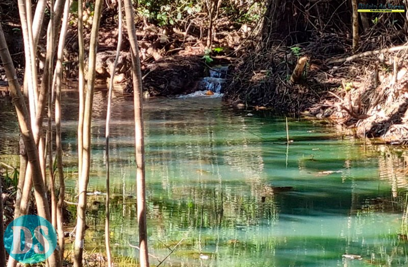

Dona ahora
Cada aporte ayuda a mantener vivos los manantiales, proteger los ríos y que los niños crezcan en contacto con la naturaleza.
El agua que llega a tu casa empieza en un manantial.
Desde 2004, el IPAC trabaja para proteger y recuperar la naturaleza en Mato Grosso, Brasil. En 2021, la recuperación de la cabecera del Río Queima Pé, principal fuente de abastecimiento de Tangará da Serra, mostró de lo que es capaz este trabajo: desde entonces, la cabecera no volvió a secarse.
Ese resultado existe porque hay gente en el campo — técnicos, voluntarios, educadores y estudiantes — y recursos para mantener las acciones. Como organización sin fines de lucro, el IPAC depende de donaciones y alianzas para continuar.
Sensibilización ambiental
Acciones con escuelas y comunidades, en sintonía con el ECA Ambiental.
Recuperación de manantiales
Desobstrucción de ojos de agua, curvas de nivel, reforestación y recarga de la napa freática.
Continuidad de los proyectos
La donación mensual da previsibilidad para planificar acciones de largo plazo.
Rendimos cuentas del uso de los recursos en la página de Transparencia. Los montos están en reales brasileños (R$).
Haz tu donación
La donación mensual se cobra automáticamente en la tarjeta. Puedes cancelarla cuando quieras.
🔒 El IPAC no almacena datos de tarjetas. Los pagos los procesa el banco o el proveedor de pagos.
Otras formas de ayudar
Dona tu tiempo como voluntario, viste la causa con productos de la Tienda IPAC o propón una alianza.